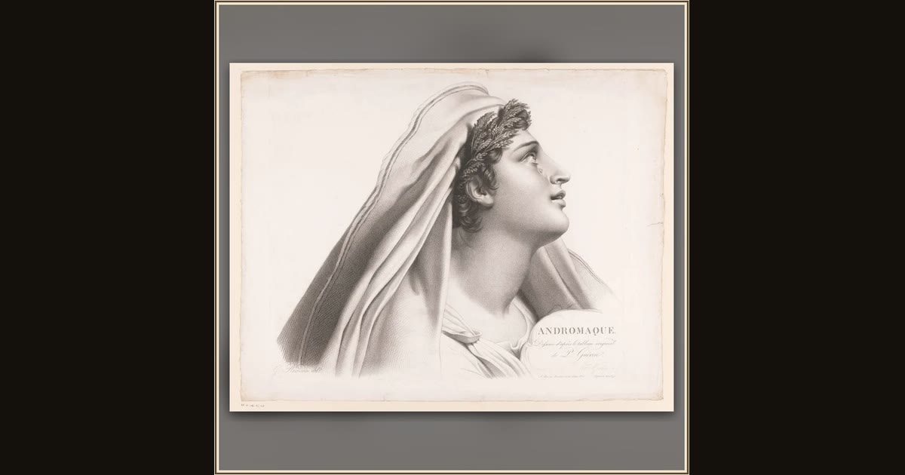

Andromache (Andromaque)
Alexis François Girard, after drawing by Gédéon Reverdin, after painting by Paulin Guérin · 1797–1828 · rijksmuseum
A veiled, laurel-crowned Andromache looks upward with a tear on her cheek. She names her reasons for weeping: her city's fall, Hector's death, and her slavery (95–99). Explore its place in Euripides's Plays, Andromache, line 95.